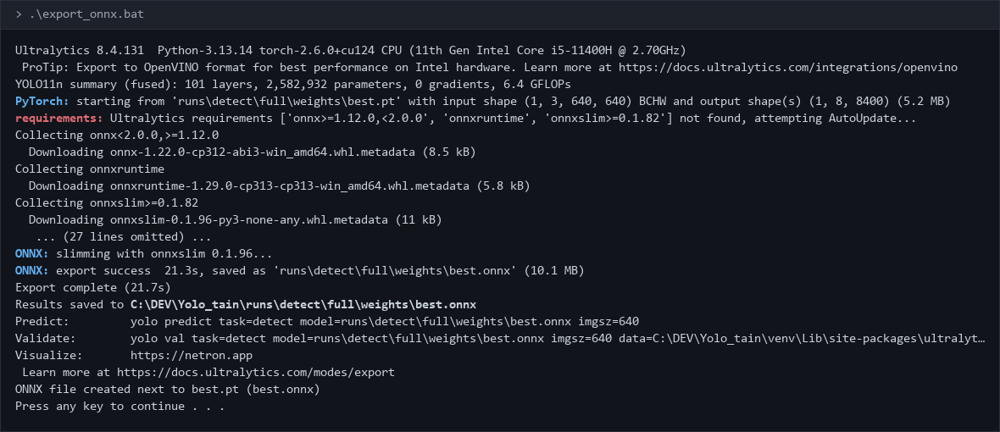
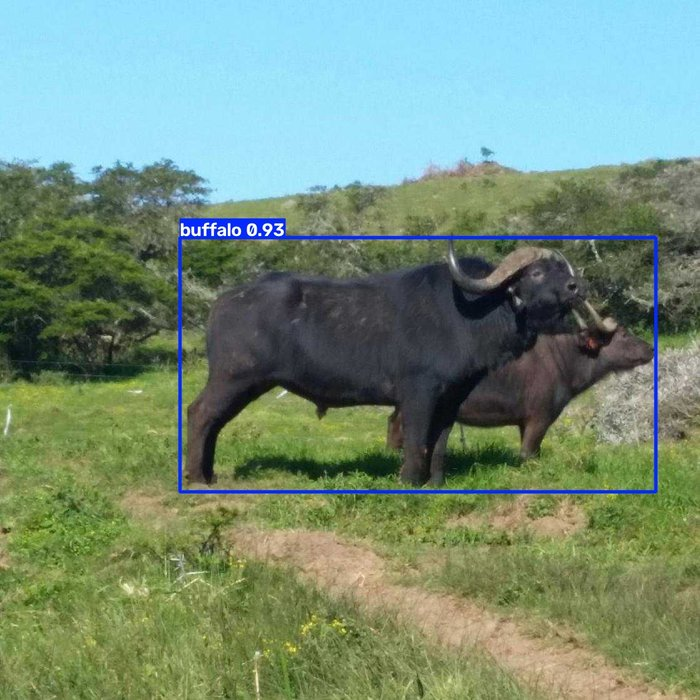
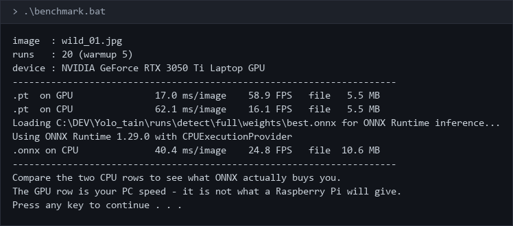

.pt) เป็นฟอร์แมตที่เหมาะกับการรันบน Edge Device เช่น ONNXruns\detect\full\weights\best.ptLab3_CustomDataset\raw_images\ (ใช้เป็นภาพทดสอบ)ไฟล์ .pt ต้องพึ่ง PyTorch ซึ่งเป็นไลบรารีขนาดใหญ่มาก (กว่า 2 GB เมื่อรวม CUDA) ไม่เหมาะกับอุปกรณ์ Edge ที่มี CPU/RAM/พื้นที่จำกัด
การแปลงเป็น ONNX (Open Neural Network Exchange) ทำให้รันด้วย ONNX Runtime ที่เบากว่ามาก และยังแปลงต่อเป็น TFLite, NCNN, Hailo ฯลฯ ได้อีก
cd Lab6_Export\scripts .\export_onnx.bat

AutoUpdate ด้านบน| บรรทัด | บอกอะไร |
|---|---|
requirements: AutoUpdate success 19.2s | Ultralytics ติดตั้งไลบรารีที่ขาดให้เองอัตโนมัติ (onnx, onnxruntime, onnxslim) ครั้งแรกจึงช้ากว่าปกติ ครั้งต่อไปจะข้ามขั้นนี้ |
WARNING requirements: Restart runtime or rerun command... | ไม่ใช่ error — เตือนว่าถ้าไลบรารีเพิ่งถูกติดตั้ง อาจต้องรันคำสั่งซ้ำอีกครั้ง ถ้ารอบนี้ export สำเร็จแล้วก็ไม่ต้องทำอะไร |
opset 18 | เวอร์ชันของชุดคำสั่ง ONNX — ถ้าอุปกรณ์ปลายทางรองรับเวอร์ชันเก่ากว่า ต้องระบุ opset=12 ตอน export |
slimming with onnxslim | ผลของ simplify=True — ยุบ operation ที่ซ้ำซ้อนออก ทำให้กราฟเล็กลงและรันเร็วขึ้น |
export success, saved as best.onnx (10.1 MB) | ไฟล์ถูกวางไว้ข้าง ๆ best.pt ในโฟลเดอร์เดียวกัน |
.\test_onnx.bat

.onnx — ตรวจเจอ buffalo ถูกต้อง ยืนยันว่า export ไม่ได้ทำให้โมเดลเสียLoading runs\detect\full\weights\best.onnx for ONNX Runtime inference... image 1/1 ...\wild_01.jpg: 640x640 1 buffalo, 30.8ms Speed: 5.1ms preprocess, 30.8ms inference, 4.7ms postprocess per image
device=cpu — ถ้าไม่ใส่ onnxruntime จะเห็นการ์ดจอ NVIDIA แล้วพยายามใช้ CUDA จนพังด้วย error ยาว ๆ ว่า Error loading onnxruntime_providers_cuda.dll which depends on cublasLt64_13.dll which is missingonnxruntime เป็นรุ่น CPU ไม่ได้แนบไฟล์ฝั่ง CUDA มาให้ — และการรันบน CPU ก็คือสถานการณ์จริงอยู่แล้ว เพราะเราจะเอา ONNX ไปลง Raspberry Pi ที่ไม่มี GPUwild_01.jpg จาก Lab 3 ไม่ใช่ test.jpg ของ Lab 2 เพราะโมเดลนี้รู้จักแค่ 4 คลาสสัตว์ ถ้าเอารูปรถบัสมาทดสอบจะได้ (no detections) ซึ่งถูกต้องแต่พิสูจน์อะไรไม่ได้เลย.\benchmark.bat

| เวลา/ภาพ | FPS | ขนาดไฟล์ | |
|---|---|---|---|
.pt บน GPU | 17.0 ms | 58.9 | 5.5 MB |
.pt บน CPU | 62.1 ms | 16.1 | 5.5 MB |
.onnx บน CPU | 40.4 ms | 24.8 | 10.6 MB |
.pt บน GPU ไปเทียบกับ .onnx บน CPU ไม่ได้ เพราะเป็นคนละฮาร์ดแวร์ เหมือนเทียบเวลาขับรถกับเวลาเดิน.pt เก็บ weight เป็น float16 บีบอัดไว้ ส่วน .onnx คลายออกเป็น float32 พร้อมกราฟการคำนวณเต็มรูปแบบ| ฟอร์แมต | ใช้กับ | ข้อดี |
|---|---|---|
.pt | PC/Server ที่มี PyTorch | ยืดหยุ่นสุด เทรนต่อได้ ใช้ GPU ได้เต็มที่ |
.onnx | ข้ามแพลตฟอร์ม, ONNX Runtime, OpenCV DNN | ไม่ต้องลง PyTorch บนเครื่องปลายทาง เร็วกว่าบน CPU |
.hef (Hailo) | Raspberry Pi + AI HAT | เร็วที่สุดบนฮาร์ดแวร์เฉพาะทาง (Lab 8) |
benchmark.pyN_WARMUP = 5
N_RUNS = 20
for _ in range(N_WARMUP): # อุ่นเครื่องก่อน เฟรมแรก ๆ ช้ากว่าปกติเสมอ
model(IMAGE, device=device, verbose=False)
t0 = time.perf_counter()
for _ in range(N_RUNS):
model(IMAGE, device=device, verbose=False)
ms = (time.perf_counter() - t0) / N_RUNS * 1000
| N_WARMUP = 5 | ทิ้ง 5 รอบแรก เพราะต้องโหลดโมเดลเข้าหน่วยความจำและจัดสรร buffer ก่อน — เราเห็นผลนี้มาแล้วใน Lab 2 ที่เฟรมแรกของวิดีโอใช้ 15.5 ms ส่วนเฟรมถัดไปเหลือ 9 ms |
| N_RUNS = 20 | เฉลี่ย 20 รอบ ไม่ใช่วัดครั้งเดียว เพราะเวลาต่อเฟรมแกว่งได้หลายเท่าตัว (Lab 2 วัดได้ตั้งแต่ 8.7 ถึง 28.2 ms บนเครื่องเดียวกัน) |
| time.perf_counter() | ใช้แทน time.time() เพราะละเอียดกว่าและไม่กระโดดเวลาระบบปรับนาฬิกา |
best.onnx ที่ได้ คือไฟล์ที่จะเอาไปใช้ต่อใน Lab 7 (Raspberry Pi) — แต่ Lab 7 รันคนละเครื่อง จึงต้องโอนไฟล์ข้ามไปเอง ด้วย Lab7_RaspberryPi\scripts\copy_to_pi.bat ซึ่งจะไปหยิบจาก runs\detect\full\weights\ ให้อัตโนมัติbest.onnx ที่ทดสอบแล้วตรวจจับได้ถูกต้อง.pt ทั้งที่บอกกันว่า ONNX "เบากว่า".pt บน GPU กับ .onnx บน CPU ตรง ๆ ไม่ได้